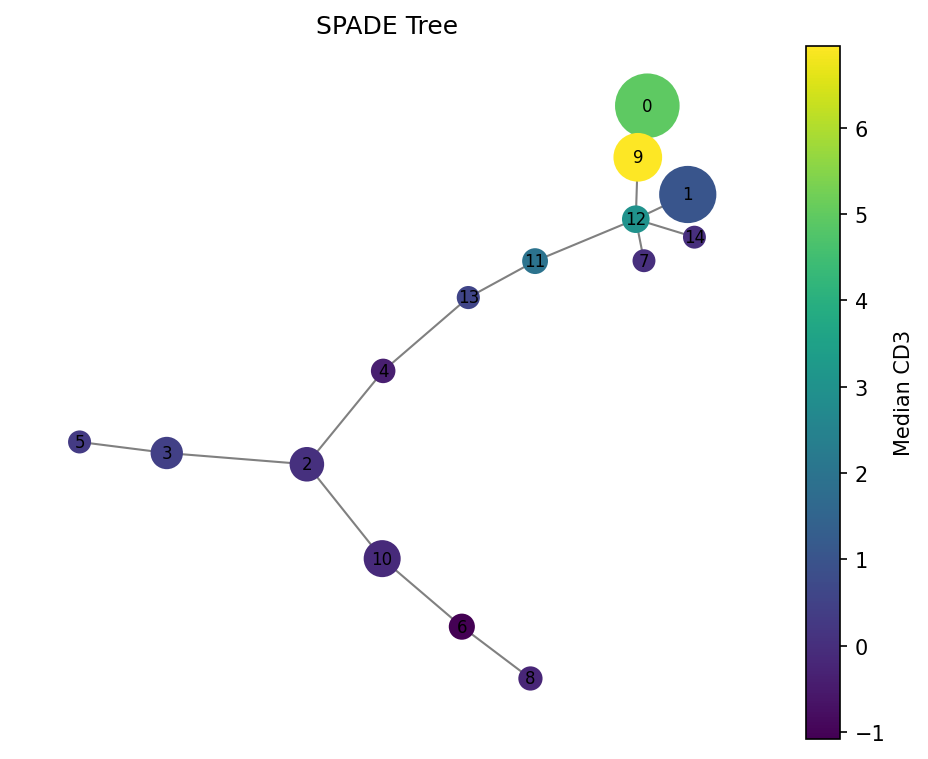
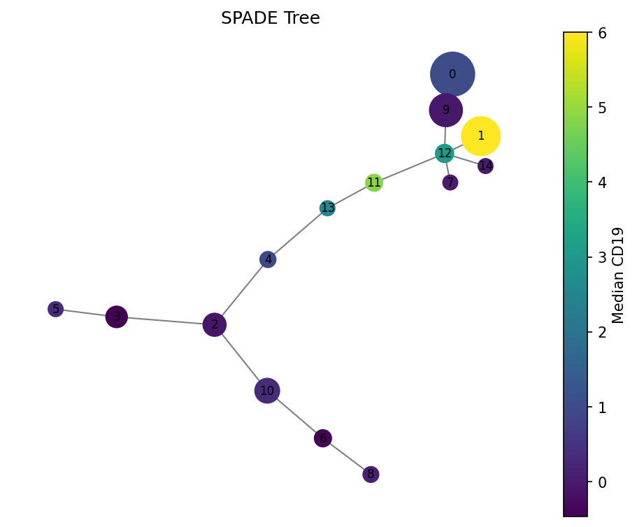

Tutorial: Flow Cytometry Analysis with densitree#
This tutorial walks through a complete SPADE analysis of CyTOF data using the Levine_32dim benchmark dataset.
Setup#
import numpy as np
import pandas as pd
import matplotlib
matplotlib.use("Agg") # use interactive backend if in a notebook
import matplotlib.pyplot as plt
from densitree import SPADE
Load data#
densitree works with numpy arrays or pandas DataFrames. Here we load the Levine_32dim benchmark dataset:
# If you have readfcs installed:
import readfcs
adata = readfcs.read("Levine_32dim.fcs")
df = adata.to_df()
# Select marker columns (exclude metadata like Time, DNA, etc.)
markers = [c for c in df.columns if c.startswith("CD") or c == "HLA-DR" or c == "Flt3"]
X = df[markers]
print(f"Data: {X.shape[0]} cells, {X.shape[1]} markers")
Run SPADE#
For CyTOF data, use arcsinh transform with cofactor 5:
spade = SPADE(
n_clusters=50, # overcluster for tree exploration
downsample_target=0.1, # retain 10% of cells
knn=10, # k for density estimation
transform="arcsinh",
cofactor=5.0, # CyTOF standard
random_state=42,
)
spade.fit(X)
print(f"Clusters: {len(np.unique(spade.labels_))}")
print(f"Tree nodes: {spade.result_.tree_.number_of_nodes()}")
print(f"Tree edges: {spade.result_.tree_.number_of_edges()}")
Explore results#
Cluster statistics#
stats = spade.result_.cluster_stats_
print(stats.head(10))
# Find the largest and smallest clusters
print("\nLargest clusters:")
print(stats.nlargest(5, "size")[["size"]])
print("\nSmallest clusters (potential rare populations):")
print(stats.nsmallest(5, "size")[["size"]])
Visualize the tree#
# Color by CD3 expression
fig = spade.result_.plot_tree(color_by="CD3", size_by="count", backend="matplotlib")
fig.savefig("spade_tree_cd3.png", dpi=150, bbox_inches="tight")

# Color by CD19 (B cell marker)
fig = spade.result_.plot_tree(color_by="CD19", size_by="count", backend="matplotlib")
fig.savefig("spade_tree_cd19.png", dpi=150, bbox_inches="tight")

Interactive exploration with plotly#
fig = spade.result_.plot_tree(color_by="CD3", backend="plotly")
fig.write_html("spade_tree_interactive.html")
# or fig.show() in a notebook
Work with the tree directly#
import networkx as nx
tree = spade.result_.tree_
# Find hub clusters (high degree = many connections)
degrees = sorted(tree.degree, key=lambda x: x[1], reverse=True)
print("Hub clusters:", degrees[:5])
# Find clusters connected to a specific node
neighbors = list(tree.neighbors(0))
print(f"Cluster 0 is connected to: {neighbors}")
# Get the path between two clusters (differentiation trajectory?)
path = nx.shortest_path(tree, source=0, target=25, weight="weight")
print(f"Path: {path}")
print("Markers along path:")
for node in path:
median = tree.nodes[node]["median"]
print(f" Cluster {node}: size={tree.nodes[node]['size']}")
Export results#
# Add cluster labels to original data
df_out = X.copy()
df_out["spade_cluster"] = spade.labels_
df_out.to_csv("annotated_cells.csv", index=False)
# Export cluster statistics
spade.result_.cluster_stats_.to_csv("cluster_stats.csv")
# Export tree for external tools
nx.write_graphml(spade.result_.tree_, "spade_tree.graphml")
Parameter tuning tips#
If you see… |
Try… |
|---|---|
Too many small clusters |
Decrease |
Rare populations missing |
Increase |
Noisy tree with many short edges |
Increase |
Very slow |
Decrease |
For fluorescence flow cytometry |
Use |